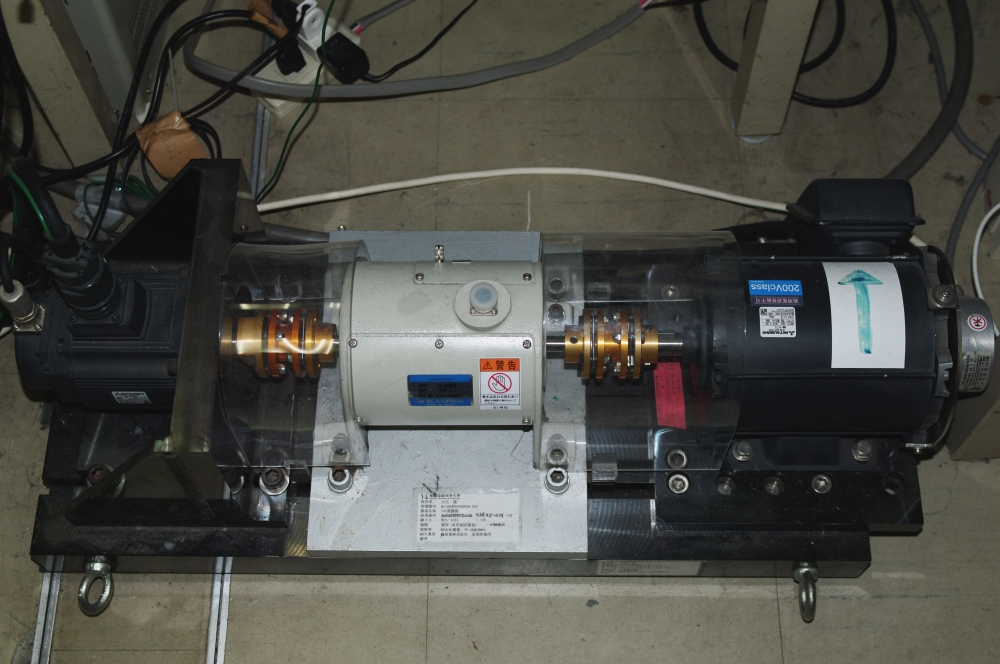

IPMSM
|  | |
Self-tuning Control of PM Motors
Recently, AC motor is used in industrial applications. However, the motor parameters are fluctuated by heat and secular change. The fluctuation of parameters causes a motor torque ripple. In order to solve the problem, we have studied about a control method of identifying a current sensor offset and parameters errors online by using current simulator that is mainly used in position sensor-less control.
High-power-factor and Low-harmonics Control of an Electrolytic Capacitor-less Inverter
Recently, an inverter-driven IPMSM system has been used in compressor drive for in a residential air conditioner application.
The system requires an improvement in an input power factor and a constant DC-link voltage and has a power factor correction (PFC) circuit in the rectifier and an electrolytic capacitor. The PFC circuit increase power loss, weight of the system and cost. The electrolytic capacitor occupies a large volume and limits its lifetime.
In order to solve the problem, an electrolytic capacitor less single-phase to three-phase power converter for compressor motor applications has been proposed.
In the proposed system source-side single-phase power is provided to the IPMSM directly.
The ripple power is smoothed by the moment of inertia of the IPMSM.
At present, we have studied about a control method for improving an input current harmonics to meet the guideline of input current harmonics.
Sensor-less Vector Control of IPMSM based on Sinusoidal Tracking Control
To reduce the cost of AC servo system, the position-sensor-less vector control, which uses the voltage and current information, is required. In the sensor-less vector control, the motor inductance variation caused by the magnetic saturation is acknowledged as a problem. To overcome this problem, we propose the sensor-less vector control of IPMSM based on the sinusoidal tracking control. In the proposed method, the current command and the flux linkage vector are computed by using the voltage, current and motor resistance. Based on the sinusoidal tracking control using the current command and the flux linkage vector in the fixed coordinate, the sensor-less vector control is achieved. Because the proposed method does not use the motor inductance parameter, the proposed method is robust against the variation of motor inductance.
車載空気調和用電動コンプレッサのノイズ低減制御
自動車の快適性を向上するうえで、走行時の騒音を低減することが重要となります。 自動車の電動化が進んだことで、主機の駆動騒音は小さくなり、エアコン用コンプレッサの駆動騒音が問題視されるようになりました。 そこで、トルクリプルテーブルを定義し、コンプレッサ駆動時のトルクリプルを低減する制御を施すことで、コンプレッサの駆動騒音低減を目指しています。